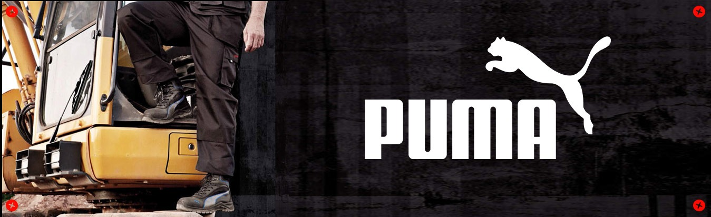

La historia de la saga se vive en una época postapocalíptica donde el sol tuvo una erupción solar y emitió llamaradas que azotaron gravemente al planeta tierra. El mundo se vio afectado por un colapso social, países enteros desaparecieron y muchos murieron de hambre. Simultáneamente, un arma biológica sin cura aparente escapó de un laboratorio e infectó a gran parte de la población. Sin embargo, con los años nació una nueva generación de individuos inmunes a la enfermedad, la cual fue apodada como «la llamarada». Todos los gobiernos restantes del mundo unieron sus fuerzas y crearon una asociación llamada CRUEL (Catástrofe y Ruina Universal: Experimento Letal), cuyo objetivo principal era salvar al planeta de la extinción humana. Esta asociación recogió inmunes de todo el mundo para realizar una serie de pruebas que los ayudaran a determinar qué los hacía inmunes; y con ello, poder realizar una cura. La llamarada como tal, ataca un área específica del cerebro y con el paso del tiempo convierte al infectado en un demente; el proceso se agiliza si el individuo pasa constantemente por situaciones de estrés, ira, ansiedad o terror.
El rodaje de la película comenzó el 13 de mayo de 2013 en Baton Rouge, Luisiana. Para las escenas del área, se usó una granja de 200 hectáreas ubicada en el pueblo de Jackson, la cual debió ser revisada puesto que se hallaron más de cincuenta víboras, varias de estas venenosas. Todo el elenco debió recibir clases de supervivencia para poder recrear armas y refugios, además de dormir a campo abierto durante el primer día de rodaje. Sin embargo, a ninguno se le probaron sus capacidades físicas como correr o saltar. Diariamente se realizaban aproximadamente sesenta tomas a fin de acortar el plazo de filmación. Dylan O'Brien aseguró que el constante rodaje favoreció a su interpretación de Thomas, puesto que el personaje pasaba la mayor parte de su tiempo cansado. Esto además, según su opinión, le dio más del espíritu del libro, donde varios chicos jóvenes intentan sobrevivir.